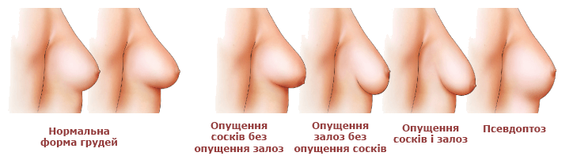
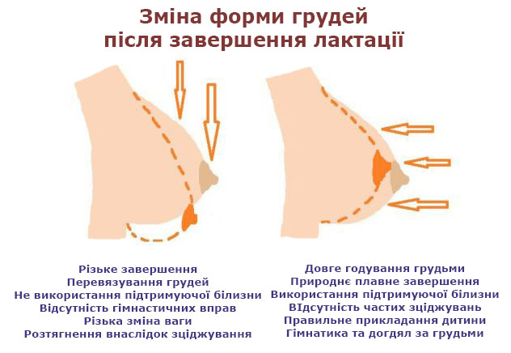
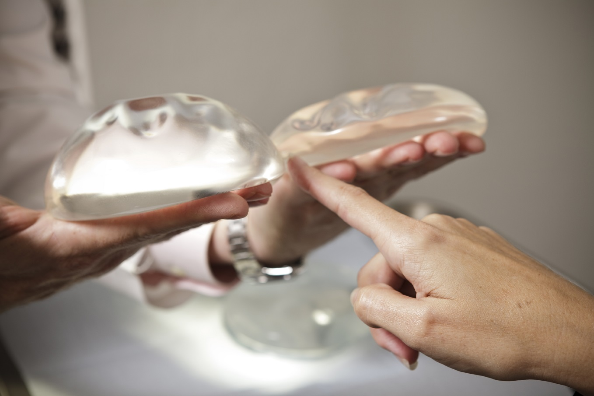
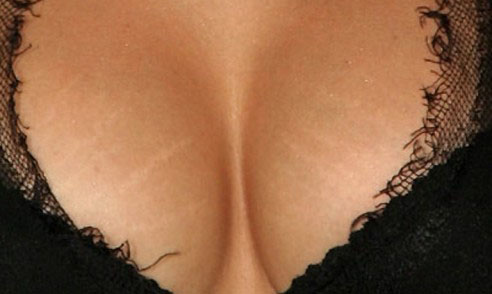

Автор: Інна Стефанець
Давайте уявимо грудь))) Середньостатистичну.
Є власне грудь та ареола з соском. Сосок – це краник, через який молоко можна отримати. Всередині грудь – це жирова та залозиста тканина. Грудне молоко збирається всередині груді, в альвеолах та протоках. Це такі маленькі мішечки та канальці. Вони обплутані тонюсінькими м’язиками.
За вироблення молока відповідає гормон пролактин, який живе у нашій голові, а конкретніше в мозку, його продукує гіпофіз. А за виштовхування – гормон окситоцин, який діє на оті тоненькі м’язики, вони стискаються – і весь вміст мішечка-альвеоли тече по тоненькому канальцю до соска.

Груди бувають різного розміру, форми та «стояння». Проте будова та механізм роботи у всіх грудях світу однаковий.
Але чому ж під час вагітності у когось груди ростуть, а у когось тільки «здуваються»? Яким чином це відбувається? І від чого залежить, якою буде форма груді після припинення ГВ?
Загалом від ДНК. Підступна генетика! Яка інколи грає з нами злий жарт, проявляючись через покоління. Не раз зустрічала мам та доньок, розмір та форма грудей яких були настільки несхожими, що якби це була основна ознака спорідненості, то ці жінки ніколи б не були родичками)))
Отже під час вагітності організм готується до появи малюка не тільки округлюючи пузіко мами, а й змінюючи груди. Якщо раніше основну масу груді складала жирова тканина, то на 12-16 тижні вагітності груди теж змінюються. Відбувається поступове заміщення залозистою тканиною жирової. Тобто йде фундаментальна закладка органу для вироблення молока. Це триває до середини вагітності. До народження дитини. Фізіологічна особливість молочних залоз така, що жирова тканина форму тримає добре, а залозиста – ні. І хтось посперечається, що, мовляв, у перші місяці мої груди і «стояли», і стирчали, і взагалі краса-краса. І я не заперечу. Оскільки то був період незрілої лактації. А як тільки дитина сформувала запит на конкретну кількість молока, а далі ще й прикорм почали вводити… то необхідність у такій кількості залозистої тканини зникає. І вона поступово усихає, розпадається і виводиться через кров (це називають інволюцією молочної залози). Натомість груди заново запасаються жировою тканиною. Саме тому, серед інших причин, годування закінчувати важливо поступово, щоби дати час на це заміщення залозистої тканини жировою.

А мастоптоз (опускання та втрата пружності жіночих грудей) – то є або ефект старіння (о так! Всі ми колись помремо))), або ж генетично обумовлена ознака. Тобто не саме ГВ, а природа передбачає, що жінка годуватиме маля груддю. І тому груди змінюються. І я вже бачу, як пластичні хірурги готові в мене злісно метати імпланти. Тож… Їхнім же колегою Брайаном Рінкером із університету Кентуккі було проведено дослідження (1), щоби з’ясувати, а чи спричиняє ГВ втрату форми/пружності грудей. У період з 1998 до 2006 років він опитав 132 жінки, які мали намір зробити пластику грудей (35% збільшити і 30% підтягнути). При цьому вчений проаналізував історію хвороб кожної клієнтки, її індекс маси тіла, кількість вагітностей, розмір грудей до вагітності та потяг до тютюнопаління. І виснував, що фактори ризику появи цього страшного вухатого мастопатозу: вік жінки, періоди схуднення більш ніж на 20 кг, високий індекс маси тіла, кількість вагітностей, паління та великі чашечки бюстгальтерів. Зв’язку обвисання грудей із тривалістю ГВ, набором ваги під час вагітності та регулярним вправами на розвиток м’язів верхньої частини торсу не було знайдено. Тому тренери, які вам обіцяють підтяжку грудей за рахунок вправ… кхм… теж готові в мене метати снарядами))) але ж у груді немає м’язової тканин. А якщо її немає, то як же її підкачати?
Оскільки мова зайшла за спорт, то кілька слів про спортивні ліфи та бюстгальтери загалом. Є низка досліджень, що доводять: носіння ліфа жодним чином не рятує від обвисання грудей (2, 3). Проте якщо жінка обирає носити білизну, то вона повинна бути максимально зручною та натуральною. Особливо у період грудного вигодовування, коли молочна залоза активно змінюється, а тому травмувати її перетисканням дуже просто.
Якщо ж раптом жінка вже з імплантом і хвилюється за стан грудей щодо ГВ, то можемо подякувати Нормі Круз (лікарці-хірургу з Пуерто-Ріко) за її дослідження (4). 119 жінок скористалися послугою щодо збільшення грудей з допомогою імплантів до вагітності. Опісля народження 57 діток були на ГВ, а 62 малюки – ні. Через рік відбувся огляд та оцінка стану грудей усіх мам. І міра обвисання грудей у мам з дітками на ГВ, і у мам з дітками на штучному була однаковою.

Мастоптоз підсилюється кожною наступною вагітністю. Неважливо, чи буде мама годувати груддю. Груди змінюють структуру щоразу під час нової вагітності, оскільки яєчники та плацента продукують естрогени та прогестерон, що в свою чергу стимулюють альвеоли (долі) молочної залози, тобто вони видовжуються та розростаються. Тож після кількох вагітностей груди «переживають» збільшення та зменшення у зв’язку із набором та скиданням ваги кілька разів. І також процес інволюції, що триває кілька місяців, грає роль.
У 2004 році було опубліковано результати італійського дослідження (5). Із опитаних 496 жінок кожна третя з чотирьох (73%) повідомила, що її груди змінилися порівняно з їхнім станом до вагітності. Мова була про збільшення розміри чи/або втрату пружності. 75% жінок із такими змінами годували груддю, а 69% – не годували. Промовисто, чи не так?
Дуже важливим є знання, що зміни молочної залози тісно пов’язані із гормональним фоном. І грудне вигодовування, як ми з’ясували вже, – це теж робота гормонів. Якщо б хтось засумнівався, то можна пригадати незначні, проте видимі зміни грудей протягом менструального циклу: набухання, болючість, часткове збільшення і тп. І саме тому під час менопаузи (коли яєчники вже не продукують гормон естрогену) відзначають зменшення та в’ялість молочних залоз. Оскільки естроген впливає не лише на еластичність шкіри, а й на підтримання рівня колагену – білка, який є основою з’єднувальної тканини грудей. Без потрібної кількості цієї речовини з’єднувальна тканина з часом усихає – і груди обвисають (6, 7).

Щодо розтяжок. Тут грають роль такі речовини, як відомий нам уже колаген та еластин. Окрім тієї ж генетики, є ще й період, коли вони активно виробляються, а з плином років організму доведеться послуговуватися вже тільки запасами. Це наче молочні та постійні зуби. Випадання та заміна їх по часу у кожної дитини індивідуальні. Те ж і зі шкірою. Якщо у майбутньої мами генетично закладено, у народі кажуть, на роду написано, що розтяжки будуть, то жодні креми, сироватки, ванночки ітд. їй не допоможуть. Тут варта уваги згадка про те, що паління сильніше впливає на стан грудей у післяпологовому періоді, оскільки воно руйнує еластин, що підтримує еластичність шкіри (8).
Також потрібно мати на увазі організацію ГВ, яка може впливати на стан грудей. Зокрема, правильна поза під час годування, коли ми прикладаємо дитину до груді, а не груди тягнемо (читай, розтягуємо) до дитини. Плавне завершення ГВ, щоби відбулося поступове накопичення жирової тканини. І однозначно жодних перетягувань, які не тільки деформують груди зовні, а й шкодять здоров’ю жінки.
Відновлення груді триває не дні, а місяці і навіть роки після остаточного завершення лактації. Тож очікувати чуда завтра вранці не треба. Допомагає також медитація на прийняття факту, що грудь не буде вже настільки пружною, як до вагітності. Якщо маєте бажання, то тут (9) розміщено галерею зі світлинами грудей різного розміру та форми. І всі вони є нормальними. Любіть себе і пам’ятайте, зміна форми грудей – це не сам факт вигодування малюка, а фізіологічні процеси в організмі жінки під час вагітності.
Великий земний уклін чудовим колегам Оксана Лесько Бабіля та Natasha Felbaba-Kovach за допомогу у підготуванні матеріалу